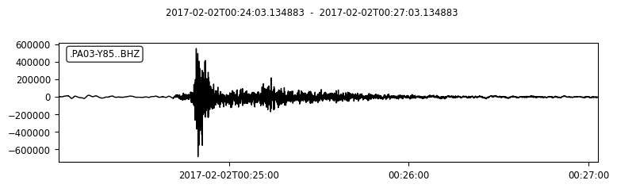
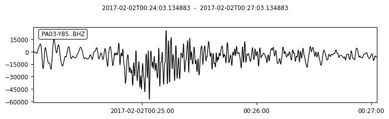
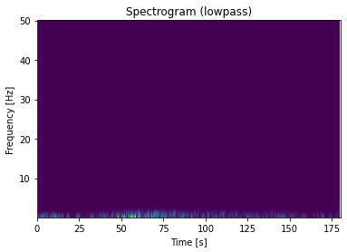
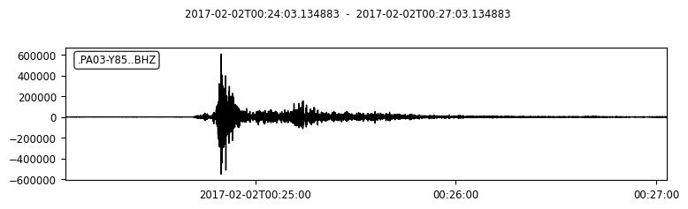
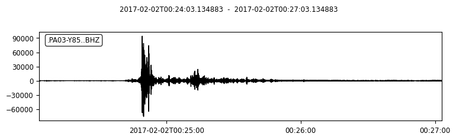
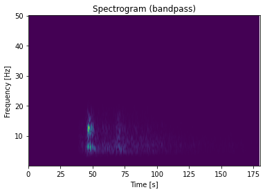
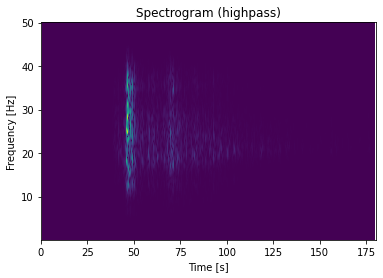

Seismic data process via ObsPy
1 Basic Seismic Data Processing
1.1 Detrend / Filter Data
detrend() is provided to remove a trend from the trace. There are many methods listed for detrend function (simple, linear, constant …), please refer to obspy.core.trace.Trace.detrend
To better visualize and demonstrate the effect of detrending, we will provide some examples with significant trends, and show the effect of detrend function.
1.1.1 Remove Mean
You can download the waveform file here. PA01.bhy
We first read the downloaded waveform file.
from obspy import read
rmean_raw = read('PA01.bhy') ## Read waveform files into an ObsPy Stream object.
# Plot the waveform without any processing and copy the stream.
rmean_raw.plot()
rmean_processed = rmean_raw.copy() ## Copy the raw stream to the new one to be processed
Tip
Now let’s detrend the waveforms and plot it again.
rmean_processed.detrend("demean")
rmean_processed.plot()
# You can compare the raw and processed waveforms by overlapping them.
import matplotlib.pyplot as plt
plt.figure(figsize=(13,5))
for tr in rmean:
data1 = tr.data
plt.plot(data1,color='red',label='raw')
for tr in rmean_test:
data2 = tr.data
plt.plot(data2,color='blue',label='removed mean')
plt.legend()
Here is the result.

1.1.2 Remove Linear trend
You can download the waveform file here. LLT.E.Vel.BF.SAC
The procedures are the same with remove mean, but use .detrend("linear") to remove linear trend. Follows is the result.

1.2 Filter Data
Filtering data removes the noise so that we can identify the phases easier in the filtered waveforms. You can apply different filters to extract the signal of interest from the raw data. filter function provides different filters. For example, bandpass, highpass and lowpass.
To further understand the effects of different filter, you can download the waveform file here PA03.bhz for practice.
from obspy import read
# Read the waveform file
raw_data = read('./PA03.bhz')
# Plot the raw waveform
raw_data.plot()
raw_data.spectrogram()
# Copy the waveform for further processing
processed_low = raw_data.copy()
# Filter the waveform with lowpass filter
processed_low.filter("lowpass",freq=1)
# Plot the waveform and spectrogram to see the difference
processed_low.plot(starttime=start_time,endtime=start_time+80)
processed_low.spectrogram(title='lowpass')
You can try with different filters using the above code. Here is the comparison using different filters
      {kind=link}
{kind=link}
{kind=link}
{kind=link}
{kind=link}
{kind=link}
{kind=link}
{kind=link}
1.3 Waveform rotation
For better reconigizing particlar seismic waves, such as Love waves and Rayleigh waves, we will rotate a seismogram from the North - East coordinate to Radial- Transverse coordinate.
Here we provide a example. You can download the waveform file here. BINY.N and BINY.E
## import modules that needed in processing
from obspy import read
from obspy.signal import rotate
import matplotlib.pyplot as plt
# Read the North-East components
rotation_N = read('BINY.N')
# Read the South-West components
rotation_E = read('BINY.E')
# print out the meta data
print(rotation_N[0].stats)
# The data of North -East components
north = rotation_N[0].data
east = rotation_E[0].data
# Get the back azimuth.
Baz = rotation_N[0].stats.sac.baz
# Rotate the data into radial and transverse components.
Radial, Transverse = rotate.rotate_ne_rt(north,east,Baz) ## rotate waveforms from North - East components to radial and transverse component
# Plot the result
plt.plot(Radial)
plt.plot(Transverse)


1.4 Seismic Phases in seismogram
Many seismic phases can be presented in the seismogram. For beginners, we can focus on P - and S - waves. Here is the demonstration of picking P - and S - waves in a teleseismic earthquake.

We will introduce the picking method in next section!
2 TauP
TauP is a toolkit to calculate the seismic travel time calculator. It handles many types of velocity models and calculate times for virtually any seismic phase with a phase parser.
Note
Seismic velocity model is the velocity profile of P and S waves along depth. IASP91 model is commonly used.
TauP can provide us a reference for identifying different phases. We can also compare it with the real arrivals, the difference between actual and theoretical arrival may interpret as a site effect.
2.1 Source Configuration
Input the information of the source (earthquake)
eq_lat = -8.624
eq_lon = 123.202
eq_dep = 171.9
2.2 Receiver Configuration
Input the information of the receiver (station)
sta_lat = -8.4882
sta_lon = 123.2696
2.3 Travel Time Calculation
There are 2 methods to calculate the travel time.
Method 1
from obspy.taup import TauPyModel
# Import the velocity model
model = TauPyModel(model="iasp91")
from obspy.geodetics import locations2degrees
for tr in st:
# calculate the distance in degree between the source and receiver
deg_distance = locations2degrees(sta_lat, sta_lon,eq_lat, eq_lon)
print(deg_distance)
# Get the arrivals using the model configured
arrivals = model.get_travel_times(source_depth_in_km=eq_dep, distance_in_degree=deg_distance, )
location2degrees calculate the great circle distance between 2 points on a spherical earth
model.get_travel_times get the travel times of the phases
Method 2
p_arrival,s_arrival = model.get_travel_times_geo(source_depth_in_km=eq_dep,
source_latitude_in_deg=eq_lat,
source_longitude_in_deg=eq_lon,
receiver_latitude_in_deg=float(sta_lat),
receiver_longitude_in_deg=float(sta_lon),
phase_list=["p","s"])
model.get_travel_times_geo get the travel times of the phases given geographical data
Then you can get the travel time of P - and S waves.
print(p_arrival, "\n", s_arrival)
#Output P - and S waves arrival time(s)
print(p_arrival.time, s_arrival.time)
2.4 Visualise the result
Plot the theoretical travel time onto the waveform.
# Import matplotlib module
import matplotlib.pyplot as plt
from matplotlib.dates import date2num
# Make figure
fig = plt.figure()
st.plot(fig=fig)
# Axis of the plot
ax = fig.axes[0]
# Add vertical line across the axes
ax.axvline(date2num((origin_time+p_arrival.time).datetime),lw=2)
ax.axvline(date2num((origin_time+s_arrival.time).datetime),lw=2,color='r')
plt.show()
fig.savefig('taup_single_waveform.png',dpi=500)
{kind=link}
3 Section Plot
3.1 Waveform cross-section plot
We have introduce how to make a waveform cross-section plot in 2.6. For this section, we would like to add the calculated TauP arrivals onto to waveform cross-section plot.
bulk = [('YS', 'BAOP', '', 'BHZ', origin_time, origin_time+120),
('YS', 'HADA', '', 'BHZ', origin_time, origin_time+120),
('YS', 'SINA', '', 'BHZ', origin_time, origin_time+120),
('YS', 'BKOR', '', 'BHZ', origin_time, origin_time+120),
('YS', 'ALRB', '', 'BHZ', origin_time, origin_time+120)]
st = client.get_waveforms_bulk(bulk)
print(st)
# Input the coordinates of stations
ALRB_loc = [-8.2194, 124.4115]
BAOP_loc = [-8.4882, 123.2696]
BKOR_loc = [-8.4868, 122.5509]
HADA_loc = [-8.3722, 123.5454]
SINA_loc = [-8.1838, 122.9124]
# Loop, get the station coordinates and calculate the distance
for tr in st:
sta = tr.stats.station
if sta == 'ALRB':
sta_lat = ALRB_loc[0]
sta_lon = ALRB_loc[1]
if sta == 'BAOP':
sta_lat = BAOP_loc[0]
sta_lon = BAOP_loc[1]
if sta =='BKOR':
sta_lat = BKOR_loc[0]
sta_lon = BKOR_loc[1]
if sta =='HADA':
sta_lat = HADA_loc[0]
sta_lon = HADA_loc[1]
if sta =='SINA':
sta_lat = SINA_loc[0]
sta_lon = SINA_loc[1]
tr.stats.distance = gps2dist_azimuth(sta_lat, sta_lon,eq_lat, eq_lon)[0]
# To check the result, you can print the distance with stations.
for tr in st:
print(tr.stats.station, tr.stats.distance)
3.2 TauP travel time
from obspy import taup
# velocity model configuration
model = taup.TauPyModel(model="iasp91")
p_time = []
s_time = []
sta = []
for tr in st_bulk:
# Get the station location for the input
station_coordinate = str(tr.stats.station)+"_loc"
p_arrival ,s_arrival = model.get_travel_times_geo(source_depth_in_km=eq_dep,
source_latitude_in_deg=eq_lat,
source_longitude_in_deg=eq_lon,
receiver_latitude_in_deg=float(eval(station_coordinate)[0]),
receiver_longitude_in_deg=float(eval(station_coordinate)[1]),
phase_list=["p","s"])
print(p_arrival, s_arrival)
# Append lists by stations, p & s arrivals
sta.append(tr.stats.station)
p_time.append(p_arrival.time)
s_time.append(s_arrival.time)
The goal for us is to get the P - and S wave arrival of each station and save them into lists so that we can handle the result later.
3.3 Output the TauP result as text file for further processing
As we are handling the data with more than 1 station, it is better for us to save the TauP result in a txt file.
# Make a table using pandas and save it to the text file
import pandas as pd
# List to pandas.dataframe
Station = pd.DataFrame(sta)
P_arrival = pd.DataFrame(p_time)
S_arrival = pd.DataFrame(s_time)
# Combine the column together and make a table
tauP_result = pd.concat([Station, P_arrival, S_arrival], axis=1)
# Output the table as a text file
tauP_result.to_csv('taup_result.txt',sep=' ', index=False, header=False)
print(tauP_result[0])
Note
pd.DataFrame Data structure
pd.concat concatenate pandas objects along a particular axis with optional set logic along the other axes
pd.to_csv write object to a comma-separated values (csv) file
3.4 Trim and filter data
# Trim the waveform data - shorter time range
st.trim(origin_time, origin_time + p_time[0]+150)
# Filter the waveform
st.detrend('linear')
st.filter('bandpass', freqmin=2, freqmax=15)
trim() cut all traces with given start time and end time
3.5 Add more components on your plot
Then you can add more components in the plot. For example, station name, calculated P - and S wave arrival time.
# Add more components onto the section plot
import numpy as np
ax = fig.axes[0]
# Add title
ax.set_title('Waveform cross-section plot')
# Add station names next to the waveforms
for tr in st:
ax.text((tr.stats.distance / 1e3)+1, 1, tr.stats.station, rotation=270,va="top", ha="center", zorder=10)
# Load the tauP output text file
ps_pick = np.loadtxt('taup_result.txt', dtype=str)
# Mark the P & S arrival onto the waveform plot
for tr in st:
# Find the P & S arrivals by stations
sta = tr.stats.station
print(ps_pick[ps_pick[:,0] == sta,1 ])
# Y-axis
p_pick = float(ps_pick[ps_pick[:,0] == sta,1 ])
s_pick = float(ps_pick[ps_pick[:,0] == sta,2 ])
# Offset (x-axis) in km
offset = tr.stats.distance/1e3
# Make the scatter plot
ax.scatter(offset,p_pick, c ='b', marker = '_',s=150)
ax.scatter(offset,s_pick, c ='r', marker = '_',s=150)
axes.set_title set a title for the axes
axes.text add text to the axes
np.loadtxt load the data from the text file
axes.scatter a scatter plot of y vs. X with varying marker size and/or colour
# plot again
st.plot(type='section', recordstart=0, recordlength=60, time_down=True, linewidth=.5, grid_linewidth=.5, show=False, fig=fig)
# Save the figure
# dpi = how many pixels the figure comprises
fig.savefig('section_plot.png',dpi=500)
{kind=link}
The section plot is just a recap of the previous section. Let’s have a try!!
4 Exercises
Here is the event information of a magnitude 7.7 earthquake occurred in 2018.
Note
The above is an earthquake with magnitude 7.3, try to find a station that was operating during the event and download the waveform data. (10 marks)
Visualize the waveforms and the frequency content of the phases (10 marks)
Make filter to highlight the phases of the seismic trace. and Plot the waveform again with clear P- and S-waves arrivals (20 marks)
Try to identify the Love and Rayleigh waves and estimate their arrivals. (30 marks)
Plot a cross-section with title(5) , station names(5) , P - and S - wave arrival(10). And estimate the apparent velocity of P and S wave(10). (30 marks)